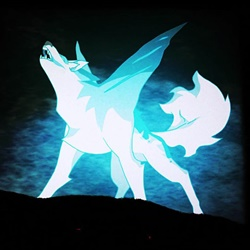

Geschichte: Er ist der Söhne von Luzifer und hat einen deutlich älteren Bruder aber er war das Geschwisterteil mit den meisten Problemen. Alles, wenn etwas mit Feuer oder ähnliches passierte, war meistens seine Schuld. Keine wusste was genau seine Gedanken dahinter waren aber das sollte sich bald mit der Role des Teufels ändern. Als Teufel hatte er nie das Gefühl von richtiger Liebe kennengelernt und war auch bei vielen gehasst. Seine Fähigkeiten wurden nach und nach viel Stärker aber wurde am Ende von denen übernommen. Er wurde dadurch sein eigener schlimmster Feind und war wirklich lange alleine damit. Bis zu diesem Tag an dem jemand ihn so liebte wie er war und die Vergangenheit nicht wirklich interessierte. Sie wollte immer an seiner Seite sein und in jeder Hinsicht unterstützen. Die Welt hatte jedoch etwas ganz anderes geplant und tötet Sie mit seinem eigenen Schwert in einem direkten Umfall. Mare bereut es wirklich sehr und wird nie wieder der Gleiche wie vorher sein. Nach sehr viel Zeit wurde er immer mehr verrückt und wahnsinnig. Er tut immer noch sich selbst dafür beschuldigen für den Umfall an seiner Freundin aber weiß auch, dass es sich niemals ändern wird.
Geschichte: Sie war die einzige Tochter von einem Werwolf Vater und einer Menschen Mutter. Ihr richtiger Name war für alle ein großes Geheimniss, nicht mal ihre engsten Freunde wussten es genau. Sie nannte sich selbst immer nur Ashley aber über die ganze Zeit hatte es keiner mehr geglaubt. Als Symbol ein halb Werwolf zu sein hatte Sie auf der linken Schulter eine Kratzwunde und jeder hatte deshalb Angst vor ihr. Sie hatte niemals jemanden ihre wirkliche Gestalt gezeigt, weil sie zu viel Angst hatte nur noch mehr gehasst zu werden. Ihr leben war nicht das beste aber hatte es soweit akzeptiert und fand sehr viel später mit einer Gruppe bei einem Ausflug das Portal zur Hölle. Niemand wusste etwas darüber und ihre Angst war deswegen mehr als sehr groß. Sie wurde von einem Freund hinein geschubst und fand sich selbst auf einer Plattform vorm Teufel wieder. Ihre Augen waren voller Angst aber sah hoch zu ihm und verliebte sich direkt in ihn. Ein paar Geschichten darüber waren ihr bereits sehr gut bekannt aber interessierte sich nicht wirklich dafür und würde alles dafür tun um mit ihm zusammen sein zu können. Nach einigen Jahren wurden Sie ein paar und unterstützten sich gegenseitig. Die Süße/Liebes Form hat nur funktioniert als Sie noch am Leben war und funktioniert demnach nicht mehr nach ihren Tod. Alles war soweit in Ordnung aber das böse Blut war der Grund für den direkten Umfall und ist dann daran auch am Ende gestorben.